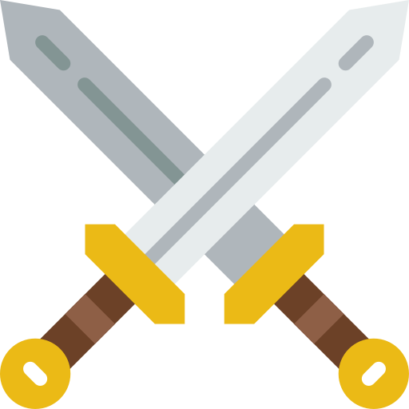
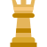
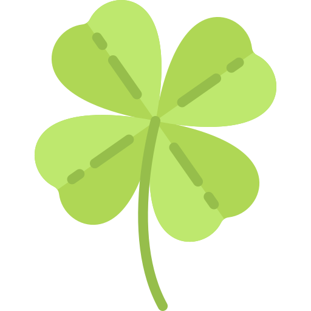
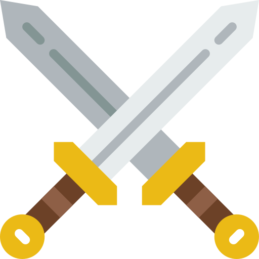
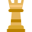
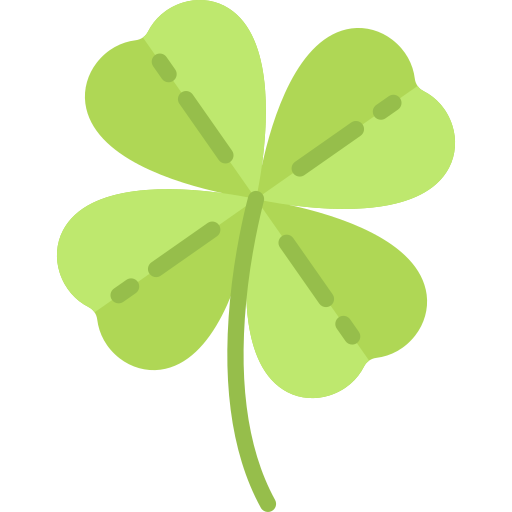

Voici les derniers jeux mis en ligne
 





Joeurs : 3-6
Durée: 20 minutes
Editeur : Cocktail Games
Auteur : Charles Chevalier
Année : 2013
Vivez les grandes heures de Radio Londres. Endossez le rôle de résistants qui doivent faire passer des messages codés à d'autres résistants. Mais décrypter également des informations diffusées par d'autres réseaux. Dans ce jeu où l'imagination sera votre meilleure arme, utilisez 4 types de transmission pour communiquer des données en évitant qu'elles ne soient interceptées par l'armée allemande.
Joeurs : 3-5
Durée: 40 minutes
Editeur : Iello
Auteur : Bruno Faidutti
Année : 2011
Dans ce jeu de plis plein de surprises, vous pourrez jouer un shaman gobelin, un cavalier nain, un gobelin ninja, un dragon philosophe, une momie, un musicien et surtout le roi des nains... Une qu^te est révélée à chaque manche. Chacun doit ensuite, selon son jeu, en tirer le meilleur parti.
Joeurs : 2-9
Durée: 12 minutes
Editeur : Repos Production
Auteur : Roberto Fraga
Année : 2016
Plongez dans l'ambiance de folie d'un hopital. Suturez, scannez, réanimez... Serez vous capable de sauver votre patient ?
Joeurs : 2-4
Durée: 90 minutes
Editeur : Iello
Auteur : Vlaada Chvátil
Année : 2011
Le donjon était dans un sale état. Le maître était vaincu et le stock de pioches de rechange dangereusement bas…. rude journée pour un diablotin. En retournant têtes basses vers la ville, les diablotins s’interrogeaient sur leur avenir professionnel lorsque l’un d’entre eux proposa : « Hé, les gars, vous savez ce dont cette ville a besoin ? D’une monstrerie. » Une monstrerie ? Oui, une animalerie dédiée aux maîtres de donjons ! Quelle idée fantastique ! Et y’a personne d’autre sur le coup ! Aucune concurrence ! On est riche ! On a le business dans le sang ! On est les boss !
Joeurs : 2-4
Durée: 10 minutes
Editeur : La boîte de jeu
Auteur : Benoit Bannier
Année : 2015
Êtes vous prêt à devenir le plus prestigieux des tueurs à gages ? Éliminez vos cibles. Fondez vous parmi les suspects Évitez les policiers et démasquez vos adversaires ! 10 minutes, ça peut être très court, mais ça peur aussi paraître une éternité quand tous les yeux sont braqués sur vous !
Joeurs : 2-4
Durée: 60 minutes
Editeur : Space Cowboys
Auteur : Matthew Dunstan
Brett J. Gilbert
Année : 2015
Forgez votre légende dans la Grèce mythologique ! Jeune demi-dieu, vous cherchez la faveur divine afin de prendre place au sommet de l'Olympe. Recrutez des héros, rassemblez des artefacts puissants, obtenez l'aide des immortels et choisissez votre quête. Quand vos alliés auront accompli leur destinée, ils rejoindront l'Elysium, le repos des héros, et contribueront à votre légende. Lorsque tous les récits seront écrits, un seul d'entre vous rejoindra les dieux de l'Olympe.
Joeurs : 2-4
Durée: 45 minutes
Editeur : Bombyx
Auteur : Bruno Cathala
Charles Chevalier
Année : 2014
Depuis des siècles, des créatures règnent sans partage sur les profondeurs des océans. Leur royaume, Abyss, est respecté par tous les peuples alliés, heureux d'y trouver une protection contre les redoutables monstres sous-marins. Bientôt, le trône sera vacant... Et si c'était le moment de vous en emparer ? Le temps presse ! Plus que quelques jours avant la nomination du futur monarque. Pour étendre votre influence et apparaître comme le seul et unique recours, vous devez: - Explorer les profondeurs à la recherche d'alliés. - Recruter les meilleurs seigneurs et - Contrôler les principaux lieux du royaume.